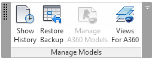

Selecting Views for Forge Translation
By default, the translation process for
the Forge Viewer extracts
and transmits all 2D views from a Revit RVT BIM project file, but only the standard "{3D}" 3D view.
This behaviour can be modified manually by installing A360 Collaboration for Revit (C4R), launching 'Views for A360' and selecting the desired additional views:

For the full details on this manual selection process, please refer to the explanation on how to export multiple 3D views for View and Data API.
In the background, the view selection command actually launches another add-in, the ExportViewSelectorAddin, typically installed in the folder C:\ProgramData\Autodesk\Revit\Addins\2017\ExportViewSelectorAddin.
With this background information, we can address the following query:
Question: Is there a way to programmatically select which views are being extracted from a Revit document so they show up in the Forge Viewer?
The A360 add-in mentioned above can do it by manually selecting the views for each document, but that is not a realistic approach for a large and complex project.
Answer: External developers can write their own Revit add-in to programmatically select views by using ExportViewSelectorAddin.dll.
It is installed as part of the A360 Collaboration for Revit (C4R) package.
The view selection was just further enhanced to correctly handle views from the 'Structural Plans' section.
Check out the latest C4R update release and install the newest version of ExportViewSelectorAddin.dll.